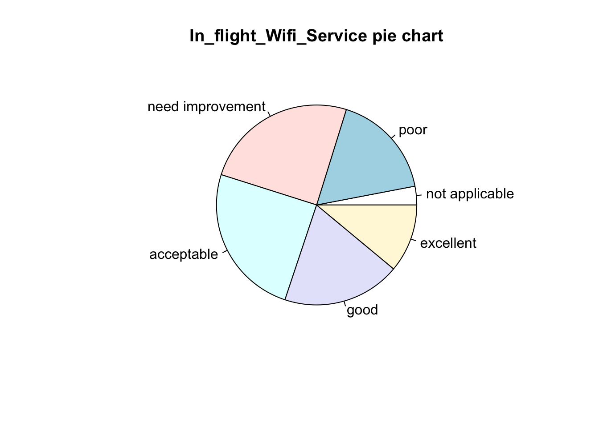

library(tidyverse)
library(ggplot2)
library(lubridate)
library(cowplot)
library(DataExplorer)
library(plyr)
knitr::opts_chunk$set(echo = TRUE, warning=FALSE, message=FALSE)Final Project Assignment: Sai Venkatesh
final_Project_assignment_1
final_project_data_description
Analysis of Airplane Passenger Satisfaction Dataset
Part 1. Introduction
Dataset Introduction:
The problem consists of Airplane Passenger Satisfaction data set.
The data set was taken from Kaggle.com (https://www.kaggle.com/datasets/). The data set has information related to passengers and the aggregated data of surveys collected post service experience.
The data set consists of random sample of 120000+ individuals who travelled using their flights. The on-time performance of the flights along with the passengers information is published in the csv file named ‘airplane_passenger_satisfaction. These passengers were later asked to provide their feedback on various parameters related to the flight along with their overall experience. These collected details are made available in the report. In the survey, the passengers were explicitly asked whether they were satisfied with their overall flight experience and that is captured in the data of survey report under the variable labelled ’Satisfaction’.
What questions do you like to answer with this data set(s)?
This report explores the survey analysis based on customer satisfaction scores from 120000+ airline passengers. This capability of leveraging the data and by determining the relative importance of each parameter with respect to the passenger satisfaction can mean the difference between winning over a new customer and losing an old loyal customer.
The report will explore the clean data through visualization in order to answer the general question:
What is the impact of various parameters on customer satisfaction and what are the steps to be taken by the airline to improve customer satisfaction?
Part 2. Describe the data set(s)
The given data set is in csv format. The command read.csv is used for importing the data set.
airplaneDS <- read.csv("/Users/saivenkatesh/Downloads/airline_passenger_satisfaction.csv", na.strings = c("", "NA"))
nrow(airplaneDS)[1] 129880 ncol(airplaneDS)[1] 24 dim(airplaneDS)[1] 129880 24 head(airplaneDS, n=3)• The number of rows in the data set is 129880.
• The number of columns in the data set is 24.
Each row of the data set consists of
- Unique passenger identifier
- Gender of the passenger (Female/Male)
- Age of the passenger
- Type of airline customer (First-time/Returning)
- Purpose of the flight (Business/Personal)
- Travel class in the airplane for the passenger seat
- Flight distance in miles
- Flight departure delay in minutes
- Flight arrival delay in minutes
- Satisfaction level with the convenience of the flight departure and arrival times from 1 (lowest) to 5 (highest) - 0 means “not applicable”
- Satisfaction level with the online booking experience from 1 (lowest) to 5 (highest) - 0 means “not applicable”
- Satisfaction level with the check-in service from 1 (lowest) to 5 (highest) - 0 means “not applicable”
- Satisfaction level with the online boarding experience from 1 (lowest) to 5 (highest) - 0 means “not applicable”
- Satisfaction level with the gate location in the airport from 1 (lowest) to 5 (highest) - 0 means “not applicable”
- Satisfaction level with the on-boarding service in the airport from 1 (lowest) to 5 (highest) - 0 means “not applicable”
- Satisfaction level with the comfort of the airplane seat from 1 (lowest) to 5 (highest) - 0 means “not applicable”
- Satisfaction level with the leg room of the airplane seat from 1 (lowest) to 5 (highest) - 0 means “not applicable”
- Satisfaction level with the cleanliness of the airplane from 1 (lowest) to 5 (highest) - 0 means “not applicable”
- Satisfaction level with the food and drinks on the airplane from 1 (lowest) to 5 (highest) - 0 means “not applicable”
- Satisfaction level with the in-flight service from 1 (lowest) to 5 (highest) - 0 means “not applicable”
- Satisfaction level with the in-flight Wifi service from 1 (lowest) to 5 (highest) - 0 means “not applicable”
- Satisfaction level with the in-flight entertainment from 1 (lowest) to 5 (highest) - 0 means “not applicable”
- Satisfaction level with the baggage handling from the airline from 1 (lowest) to 5 (highest) - 0 means “not applicable”
- Overall satisfaction level with the airline (Satisfied/Neutral or unsatisfied).
Each row represents the survey details of one passenger and each column represents specific feature. The head and tail functions are used to view the first and last few rows of the data set.
The data set contains variables separated by dots. As variable separated by dots create ambiguity in programming language, we will use underscore separated naming convention. Moreover, underscore separated variables are faster to read. The variables are hence separated by underscores for better understanding.
finalData <- airplaneDS
names(finalData)[names(finalData) == "Customer.Type"] <- "Customer_Type"
names(finalData)[names(finalData) == "Type.of.Travel"] <- "Type_of_Travel"
names(finalData)[names(finalData) == "Flight.Distance"] <- "Flight_Distance"
names(finalData)[names(finalData) == "Departure.Delay"] <- "Departure_Delay"
names(finalData)[names(finalData) == "Arrival.Delay"] <- "Arrival_Delay"
names(finalData)[names(finalData) == "Departure.and.Arrival.Time.Convenience"] <- "Departure_and_Arrival_Time_Convenience"
names(finalData)[names(finalData) == "Ease.of.Online.Booking"] <- "Ease_of_Online_Booking"
names(finalData)[names(finalData) == "Check.in.Service"] <- "Check_in_Service"
names(finalData)[names(finalData) == "Online.Boarding"] <- "Online_Boarding"
names(finalData)[names(finalData) == "Gate.Location"] <- "Gate_Location"
names(finalData)[names(finalData) == "On.board.Service"] <- "On_board_Service"
names(finalData)[names(finalData) == "Seat.Comfort"] <- "Seat_Comfort"
names(finalData)[names(finalData) == "Leg.Room.Service"] <- "Leg_Room_Service"
names(finalData)[names(finalData) == "Food.and.Drink"] <- "Food_and_Drink"
names(finalData)[names(finalData) == "In.flight.Service"] <- "In_flight_Service"
names(finalData)[names(finalData) == "In.flight.Wifi.Service"] <- "In_flight_Wifi_Service"
names(finalData)[names(finalData) == "In.flight.Entertainment"] <- "In_flight_Entertainment"
names(finalData)[names(finalData) == "Baggage.Handling"] <- "Baggage_Handling" str(finalData)'data.frame': 129880 obs. of 24 variables:
$ ID : int 1 2 3 4 5 6 7 8 9 10 ...
$ Gender : chr "Male" "Female" "Male" "Male" ...
$ Age : int 48 35 41 50 49 43 43 60 50 38 ...
$ Customer_Type : chr "First-time" "Returning" "Returning" "Returning" ...
$ Type_of_Travel : chr "Business" "Business" "Business" "Business" ...
$ Class : chr "Business" "Business" "Business" "Business" ...
$ Flight_Distance : int 821 821 853 1905 3470 3788 1963 853 2607 2822 ...
$ Departure_Delay : int 2 26 0 0 0 0 0 0 0 13 ...
$ Arrival_Delay : int 5 39 0 0 1 0 0 3 0 0 ...
$ Departure_and_Arrival_Time_Convenience: int 3 2 4 2 3 4 3 3 1 2 ...
$ Ease_of_Online_Booking : int 3 2 4 2 3 4 3 4 1 5 ...
$ Check_in_Service : int 4 3 4 3 3 3 4 3 3 3 ...
$ Online_Boarding : int 3 5 5 4 5 5 4 4 2 5 ...
$ Gate_Location : int 3 2 4 2 3 4 3 4 1 2 ...
$ On_board_Service : int 3 5 3 5 3 4 5 3 4 5 ...
$ Seat_Comfort : int 5 4 5 5 4 4 5 4 3 4 ...
$ Leg_Room_Service : int 2 5 3 5 4 4 5 4 4 5 ...
$ Cleanliness : int 5 5 5 4 5 3 4 4 3 4 ...
$ Food_and_Drink : int 5 3 5 4 4 3 5 4 3 2 ...
$ In_flight_Service : int 5 5 3 5 3 4 5 3 4 5 ...
$ In_flight_Wifi_Service : int 3 2 4 2 3 4 3 4 4 2 ...
$ In_flight_Entertainment : int 5 5 3 5 3 4 5 3 4 5 ...
$ Baggage_Handling : int 5 5 3 5 3 4 5 3 4 5 ...
$ Satisfaction : chr "Neutral or Dissatisfied" "Satisfied" "Satisfied" "Satisfied" ... summary(finalData) ID Gender Age Customer_Type
Min. : 1 Length:129880 Min. : 7.00 Length:129880
1st Qu.: 32471 Class :character 1st Qu.:27.00 Class :character
Median : 64940 Mode :character Median :40.00 Mode :character
Mean : 64940 Mean :39.43
3rd Qu.: 97410 3rd Qu.:51.00
Max. :129880 Max. :85.00
Type_of_Travel Class Flight_Distance Departure_Delay
Length:129880 Length:129880 Min. : 31 Min. : 0.00
Class :character Class :character 1st Qu.: 414 1st Qu.: 0.00
Mode :character Mode :character Median : 844 Median : 0.00
Mean :1190 Mean : 14.71
3rd Qu.:1744 3rd Qu.: 12.00
Max. :4983 Max. :1592.00
Arrival_Delay Departure_and_Arrival_Time_Convenience
Min. : 0.00 Min. :0.000
1st Qu.: 0.00 1st Qu.:2.000
Median : 0.00 Median :3.000
Mean : 15.09 Mean :3.058
3rd Qu.: 13.00 3rd Qu.:4.000
Max. :1584.00 Max. :5.000
NA's :393
Ease_of_Online_Booking Check_in_Service Online_Boarding Gate_Location
Min. :0.000 Min. :0.000 Min. :0.000 Min. :0.000
1st Qu.:2.000 1st Qu.:3.000 1st Qu.:2.000 1st Qu.:2.000
Median :3.000 Median :3.000 Median :3.000 Median :3.000
Mean :2.757 Mean :3.306 Mean :3.253 Mean :2.977
3rd Qu.:4.000 3rd Qu.:4.000 3rd Qu.:4.000 3rd Qu.:4.000
Max. :5.000 Max. :5.000 Max. :5.000 Max. :5.000
On_board_Service Seat_Comfort Leg_Room_Service Cleanliness
Min. :0.000 Min. :0.000 Min. :0.000 Min. :0.000
1st Qu.:2.000 1st Qu.:2.000 1st Qu.:2.000 1st Qu.:2.000
Median :4.000 Median :4.000 Median :4.000 Median :3.000
Mean :3.383 Mean :3.441 Mean :3.351 Mean :3.286
3rd Qu.:4.000 3rd Qu.:5.000 3rd Qu.:4.000 3rd Qu.:4.000
Max. :5.000 Max. :5.000 Max. :5.000 Max. :5.000
Food_and_Drink In_flight_Service In_flight_Wifi_Service
Min. :0.000 Min. :0.000 Min. :0.000
1st Qu.:2.000 1st Qu.:3.000 1st Qu.:2.000
Median :3.000 Median :4.000 Median :3.000
Mean :3.205 Mean :3.642 Mean :2.729
3rd Qu.:4.000 3rd Qu.:5.000 3rd Qu.:4.000
Max. :5.000 Max. :5.000 Max. :5.000
In_flight_Entertainment Baggage_Handling Satisfaction
Min. :0.000 Min. :1.000 Length:129880
1st Qu.:2.000 1st Qu.:3.000 Class :character
Median :4.000 Median :4.000 Mode :character
Mean :3.358 Mean :3.632
3rd Qu.:4.000 3rd Qu.:5.000
Max. :5.000 Max. :5.000
The structure of the data was analysed using the str function and it found that there are no duplicate columns. From the result, it is observed that many of the features are categorical in nature with data type as Integer and character .
The summary of the data set is reviewed using the r function, summary. The summarized data is checked for meaningful and useful data for insight generation. The data set consists of id variable, a unique identifier for each passenger and 22 independent variables. The feature ID can be ignored as it is not going to play a major factor for the score of the target variable, Satisfaction. The Satisfaction variable is dependant variable. The table above provides the summary of the dependant variable, Satisfaction and the other independent variables. The details help to understand the central tendency and the spread of the variable.
Part 3. The Tentative Plan for Visualization
Specific Questions
In order to conclude on the general question, analysis will be done on the below set of specific questions which are:
What is the univariate analysis of the Dependant feature?
What are the proportions of passengers by Customer type, Travel Type and Class?
What is the impact of the feature age on satisfaction?
Are the features Arrival and Departure delay correlated?
What are the impacts of the Pre Departure Procedures on satisfaction?
What are the impacts of the In Flight Services on satisfaction?
What are the impacts of the In Flight Amenities on satisfaction?
Data Cleaning is a necessary step as missing data, duplicated date, abnormal or extreme values can affect the result.
Duplicate Values Check
The data was checked for any duplicated values using R function anyDuplicated and was found that there are no duplicated values.
anyDuplicated(finalData)[1] 0Outliers Analysis:
Data always needs to be checked for outliers. Without doing this, it is likely to introduce a bias that could distort the results of the study. Multiple box plot is plotted to compare the features available in the data set.
boxplot(finalData$Flight_Distance,
finalData$Departure_Delay,
finalData$Arrival_Delay,
main="Box plots of Flight Distance, Departure Delay, Arrival Delay",
ylab="Standard scaler",
col="orange",
border="black")It is observed that the features such as flight distance, Departure Delay in minutes and Arrival delay in minutes have outliers as seen in the below box plot.
Check for Missing Values:
Missing Value introduces vagueness and in turn affects the data interpretation in statistical data analysis. The data was checked for missing values and it is found that there are missing and empty values in Arrival delay. It should be treated prior to the analysis of data.
colSums(is.na(finalData)) ID Gender
0 0
Age Customer_Type
0 0
Type_of_Travel Class
0 0
Flight_Distance Departure_Delay
0 0
Arrival_Delay Departure_and_Arrival_Time_Convenience
393 0
Ease_of_Online_Booking Check_in_Service
0 0
Online_Boarding Gate_Location
0 0
On_board_Service Seat_Comfort
0 0
Leg_Room_Service Cleanliness
0 0
Food_and_Drink In_flight_Service
0 0
In_flight_Wifi_Service In_flight_Entertainment
0 0
Baggage_Handling Satisfaction
0 0 Before imputation and missing value treatment, the percentage of missing value was studied.
plot_missing(finalData)Out of the total 129880 records, only 393 records of feature Arrival delay are missing/empty values. Moreover, variable arrival delay has outliers. Hence arrival delay can be given least importance for further analysis of the data set. Incase of model evaluation, the entire column need not be dropped as the number of missing values is 0.3%. Missing values treatment can be done by omitting the 393 records as shown below and thereby the final analysis can be done on 129487 records.
final.filtered <- finalData %>% na.omit()
sum(is.na(final.filtered))[1] 0Variable Importance:
Addition/Deletion Of Variables:
As the problem statement requires interpretation of individual predictor variables, adding or deleting variables will play an important factor in dealing with a troublesome variable. But, this data set has quite a good information for the first level analysis and visualization. Hence there is no need to add or delete any variable.
Categorizing the data based on the levels:
The categorical features are organized based on Satisfaction level from 1 (lowest) to 5 (highest) - 0 means “not applicable”.
Qualities <- c('not applicable'=0, 'poor'=1, 'need improvement'=2,'acceptable'=3,'good'=4,'excellent'=5)
final.filtered$Cleanliness= as.factor(final.filtered$Cleanliness)
final.filtered$Check_in_Service= as.factor(final.filtered$Check_in_Service)
final.filtered$Baggage_Handling= as.factor(final.filtered$Baggage_Handling)
final.filtered$On_board_Service= as.factor(final.filtered$On_board_Service)
final.filtered$Leg_Room_Service= as.factor(final.filtered$Leg_Room_Service)
final.filtered$Ease_of_Online_Booking= as.factor(final.filtered$Ease_of_Online_Booking)
final.filtered$In_flight_Wifi_Service= as.factor(final.filtered$In_flight_Wifi_Service)
final.filtered$In_flight_Entertainment= as.factor(final.filtered$In_flight_Entertainment)
final.filtered$Food_and_Drink= as.factor(final.filtered$Food_and_Drink)
final.filtered$Departure_and_Arrival_Time_Convenience= as.factor(final.filtered$Departure_and_Arrival_Time_Convenience)
final.filtered$Check_in_Service= as.factor(final.filtered$Check_in_Service)
final.filtered$In_flight_Service= as.factor(final.filtered$In_flight_Service)
final.filtered$Online_Boarding= as.factor(final.filtered$Online_Boarding)
final.filtered$Gate_Location= as.factor(final.filtered$Gate_Location)
final.filtered$Seat_Comfort= as.factor(final.filtered$Seat_Comfort)The final data set contains variables which follow proper naming conventions, missing values treated and few variables converted as factors.
Insightful Visualization:
The summarized data is checked for meaningful and useful data for insight generation using different visualization methods.
The histograms help us to identify the pattern of the variables with the frequency. A good indication of how the data are spread out is obtained through the box plot. The pie chart helps to understand the different segments of Data.
The Analysis through Data Visualization is carried out in 7 steps
Univariate Analysis of Dependent Variable, Satisfaction
Proportion of Customer type, Travel Type and Class of the passengers.
Impact of variables – Age , Gender on Satisfaction
Variable importance of Departure Delay and Arrival Delay
Impact of Variables - Ease of Online booking, check in service, online boarding, gate location and onboard services.
Impact of variables – In-Flight Service, In-flight WIFI, In-Flight entertainment.
Impact of variables – Seat comfort, Cleanliness, Leg room services, Food and Drinks.
Univariate Analysis of Dependent Variable, Satisfaction
From the table of the target variable, it is found that both Neutral or Dissatisfied and Satisfied have almost equal probabilities with slightly more proportion of dissatisfied passengers. The selection is more or less balanced.
table(as.factor(final.filtered$Satisfaction))
Neutral or Dissatisfied Satisfied
73225 56262 sat <- table(as.factor(final.filtered$Satisfaction))
barplot(sat, main="Barchart of Satisfaction",col="Orange", ylab="Count")Proportion of Customer type, Travel Type and Class of the passengers
On a broader perspective, there are more passengers travelling for business reasons(89445 passengers) than personal reasons.
There are 61990 passengers (majority) who travelled in business class followed by 58117 in economy class and 9380 in economy plus class.
Lets say all the 56262 passengers (from above analysis) who are satisfied are returning passengers. Still, the remaining 105773 - 56262 = 49511 returning passengers show dissatisfied/neutral feeling which is a significant number of loyal customers.
table(as.factor(final.filtered$Type_of_Travel))
Business Personal
89445 40042 table(as.factor(final.filtered$Class))
Business Economy Economy Plus
61990 58117 9380 table(as.factor(final.filtered$Customer_Type))
First-time Returning
23714 105773 Impact of Gender and Age on Passenger Satisfaction:
table(as.factor(final.filtered$Gender))
Female Male
65703 63784 dAge <- ggplot(airplaneDS)+
aes(x=Age, fill=Satisfaction)+
geom_density(adjust=1L)+
scale_fill_hue()+
labs(title="Impact of Age on Satisfaction")
hAge <- ggplot(airplaneDS)+
aes(x=Age)+geom_histogram(bins=30L,fill ="orange", colour="black")+
scale_fill_hue()+
labs(title="Histogram of Age")
plot_grid(dAge,hAge)The proportion of male and female passengers travelling in the airline is almost equal.
From the histogram of age and density plot of age with satisfaction, it is observed that the people between the age of 40 to 60 are more satisfied with respect to the overall plane experience.
newdata_Age_gt60 <- subset(finalData, finalData$Age > 60, select = c(1:24))
table(as.factor(newdata_Age_gt60$In_flight_Entertainment))
0 1 2 3 4 5
1 1602 2055 2118 2340 1938 table(as.factor(newdata_Age_gt60$Food_and_Drink))
0 1 2 3 4 5
9 1491 2183 2249 2153 1969 table(as.factor(newdata_Age_gt60$Ease_of_Online_Booking))
0 1 2 3 4 5
471 1726 2538 2544 1775 1000 table(as.factor(newdata_Age_gt60$Check_in_Service))
1 2 3 4 5
1437 1522 2703 2724 1668 On further analysis of 60+ age group, there are many passengers in 60+ age group who are not happy with Check in service and Ease of Online Booking.
Variable importance of Departure Delay and Arrival Delay:
The scatter plot spread of Arrival Delay and Departure Delay shows that they are highly correlated. They are linearly dependant on each other and it is natural for the arrival to get delayed by the same time as that of the delay in departure in major cases.
As both of them are highly correlated and Arrival Delay has missing values, Departure Delay variable alone can be taken into consideration for further analysis.
plot(final.filtered$Departure_Delay,final.filtered$Arrival_Delay,col="turquoise")Impact of Pre Departure Procedures – Ease of Online booking, Check In Service, Online Boarding, Gate Location, Onboard Services:
a<- ggplot(finalData) +
aes(x=finalData$Ease_of_Online_Booking) +
geom_histogram(bins=30L,fill ="orange", colour="black") +
scale_fill_hue()+labs(title="Histogram of Ease of Online Booking")
b<- ggplot(finalData)+
aes(x=finalData$Check_in_Service)+
geom_histogram(bins=30L,fill ="orange", colour="black")+
scale_fill_hue()+labs(title="Histogram of Check in Service")
c<- ggplot(finalData)+
aes(x=finalData$Online_Boarding)+
geom_histogram(bins=30L,fill ="orange", colour="black")+
scale_fill_hue()+labs(title="Histogram of Online Boarding")
d<- ggplot(finalData)+
aes(x=finalData$Gate_Location)+
geom_histogram(bins=30L,fill ="orange", colour="black")+
scale_fill_hue()+labs(title="Histogram of Gate Location")
e<- ggplot(finalData)+
aes(x=finalData$On_board_Service)+
geom_histogram(bins=30L,fill ="orange", colour="black")+
scale_fill_hue()+labs(title="Histogram of On board Service")
plot_grid(a) plot_grid(b,c) plot_grid(d,e)From the histogram plots, Most of the passengers have good views on the Checkin services but not satisfied with Gate location and Ease of Online Booking.
It is recommended to Ease the online booking as more passengers find the booking process poor, not good and neural feeling towards it. Online Boarding and On board Service have good satisfaction levels.
Impact of In-Flight Service Variables – Service, Entertainment and WIFI:
lb <- c("not applicable", "poor", "need improvement","acceptable","good","excellent")
a <- revalue(as.factor(final.filtered$In_flight_Service), replace=Qualities)
summary(final.filtered$In_flight_Service) 0 1 2 3 4 5
5 8838 14252 25232 47198 33962 slicesIn_flight_Service <- c(5,8838,14252,25232,47198,33962)
pie(slicesIn_flight_Service,labels = lb, main="In_flight_Service pie chart") b <- revalue(as.factor(final.filtered$In_flight_Wifi_Service), replace=Qualities)
summary(final.filtered$In_flight_Wifi_Service) 0 1 2 3 4 5
3908 22250 32236 32087 24702 14304 slicesIn_flight_Wifi_Service <- c(3908,22250,32236,32087,24702,14304)
pie(slicesIn_flight_Wifi_Service,labels = lb, main="In_flight_Wifi_Service pie chart")
c <- revalue(as.factor(final.filtered$In_flight_Entertainment), replace=Qualities)
summary(final.filtered$In_flight_Entertainment) 0 1 2 3 4 5
18 15634 21897 23805 36682 31451 slicesIn_flight_Entertainment <- c(18,15634,21897,23805,36682,31451)
pie(slicesIn_flight_Entertainment,labels = lb, main="In_flight_Entertainment pie chart")The in-flight wifi requires improvement as quite a good proportion of people are not satisfied. The majority of the passengers are satisfied with the The in-flight Entertainment and The in-flight Services.
On further analysis, there are significant amount of both business and personal type of travel passengers who are not satisfied with the WIFI. There are more economy class passengers who are not happy with the in fight entertainment than the business class people.
newdata_WIFI_poor_needImp <- subset(finalData, finalData$In_flight_Wifi_Service <=2, select = c(1:24))
table(as.factor(newdata_WIFI_poor_needImp$Type_of_Travel))
Business Personal
38501 20063 table(as.factor(newdata_WIFI_poor_needImp$Class))
Business Economy Economy Plus
27620 26811 4133 table(as.factor(newdata_WIFI_poor_needImp$Customer_Type))
First-time Returning
10666 47898 newdata_In_flight_Entertainment_poor_needImp <- subset(finalData, finalData$In_flight_Entertainment <=2, select = c(1:24))
table(as.factor(newdata_In_flight_Entertainment_poor_needImp$Type_of_Travel))
Business Personal
22360 15301 table(as.factor(newdata_In_flight_Entertainment_poor_needImp$Class))
Business Economy Economy Plus
12965 21346 3350 table(as.factor(newdata_In_flight_Entertainment_poor_needImp$Customer_Type))
First-time Returning
8984 28677 table(as.factor(finalData$Class))
Business Economy Economy Plus
62160 58309 9411 newdata_In_flight_Service_poor_needImp <- subset(finalData, finalData$In_flight_Service <=2, select = c(1:24))
table(as.factor(newdata_In_flight_Service_poor_needImp$Type_of_Travel))
Business Personal
15394 7781 table(as.factor(newdata_In_flight_Service_poor_needImp$Class))
Business Economy Economy Plus
8794 12301 2080 table(as.factor(newdata_In_flight_Service_poor_needImp$Customer_Type))
First-time Returning
3319 19856 Impact of In Flight Amenities variables – Seat comfort, Cleanliness, Leg room services, Food and Drinks
lb <- c("not applicable", "poor", "need improvement","acceptable","good","excellent")
final.filtered$Seat_Comfort= as.factor(final.filtered$Seat_Comfort)
d <- revalue(as.factor(final.filtered$Seat_Comfort), replace=Qualities)
summary(final.filtered$Seat_Comfort) 0 1 2 3 4 5
1 15059 18462 23258 39651 33056 slicesa <- c(1,15059,18462,23258,39651,33056)
pie(slicesa,labels = lb, main="Seat Comfort pie chart") final.filtered$Leg_Room_Service= as.factor(final.filtered$Leg_Room_Service)
e <- revalue(as.factor(final.filtered$Leg_Room_Service), replace=Qualities)
summary(final.filtered$Leg_Room_Service) 0 1 2 3 4 5
596 12846 24469 24982 35779 30815 slicesb <- c(596,12846,24469 ,24982, 35779 ,30815 )
pie(slicesb,labels = lb, main="Leg Room Service pie chart") final.filtered$Cleanliness= as.factor(final.filtered$Cleanliness)
f <- revalue(as.factor(final.filtered$Cleanliness), replace=Qualities)
summary(final.filtered$Cleanliness) 0 1 2 3 4 5
14 16680 20049 30552 33871 28321 slicesc <- c(14, 16680, 20049 ,30552, 33871 ,28321 )
pie(slicesc,labels = lb, main="Cleanliness pie chart") final.filtered$Food_and_Drink= as.factor(final.filtered$Food_and_Drink)
g <- revalue(as.factor(final.filtered$Food_and_Drink), replace=Qualities)
summary(final.filtered$Food_and_Drink) 0 1 2 3 4 5
130 16010 27293 27712 30477 27865 slicesd <- c(130, 16010, 27293 ,27712, 30477 ,27865 )
pie(slicesd,labels = lb, main="Food and Drink pie chart")The Cleanliness and Food and Drink requires improvement. The majority of the passengers are satisfied with the Leg Room Service and The Seat Comfort.
newdata_Food_Drink_poor_needImp <- subset(finalData, finalData$Food_and_Drink <=3, select = c(1:24))
table(as.factor(newdata_Food_Drink_poor_needImp$Type_of_Travel))
Business Personal
47559 23801 table(as.factor(newdata_Food_Drink_poor_needImp$Class))
Business Economy Economy Plus
32075 33894 5391 table(as.factor(newdata_Food_Drink_poor_needImp$Customer_Type))
First-time Returning
14062 57298 When we analyse food and Drinks further, for food and drinks in 0-3 category, there are more business class , passengers travelling for business reasons and more returning passengers who are not happy with the food and drink.
newdata_Leg_Room_Service_poor_needImp <- subset(finalData, finalData$Leg_Room_Service <=2, select = c(1:24))
table(as.factor(newdata_Leg_Room_Service_poor_needImp$Type_of_Travel))
Business Personal
23466 14567 table(as.factor(newdata_Leg_Room_Service_poor_needImp$Customer_Type))
First-time Returning
7886 30147 table(as.factor(newdata_Leg_Room_Service_poor_needImp$Class))
Business Economy Economy Plus
13198 21300 3535 When it comes to cleanliness and Leg room space, There are 20758 and 21300 passengers respectively in Economy class who show dissatisfaction/ neutral feeling.
Part 4. Conclusion and Recommendation
- The passenger satisfaction is more or less balanced from the Univariate Analysis of Dependent Variable, Satisfaction. The summary of satisfaction shows that 56262 passengers are satisfied, whereas, 73225 passengers are dissatisfied or show neutral response.
- The passengers travelling in economy class show more dissatisfaction towards the overall flight experience followed by the business class and economy plus class.
- It is observed that the proportion of customer type as Returning is more (105773 passengers). which means there are more loyal customers who show dissatisfaction or neutral feeling towards the overall flight experience.
- From the Age impact analysis on satisfaction, its observed that for the age group above 60 and below 40, the services will have to be improved to capture that age group of passengers.
- For Pre departure procedures - Ease of online booking and Gate location accessability have to be improved.
- Exploring the data set, more than 30 percent of economy class passengers (26811 & 21346 passengers of total 58309) had neutral or dissatisfied feeling due to inflight wifi and inflight entertainment.
- For In-flight Amenities - the Cleanliness and Food and Drink requires improvement.
- Based on the outliers, missing value analysis and scatter plot of the Arrival Delay vs Departure Delay, the feature Arrival Delay can be given least importance for analysis of the data set and evaluation.
Based on the above analysis, the airline can take the below steps to win passengers:
As the majority of the passengers are loyal passengers who keep returning, pre filled data facilities can be used to ease the Pre departure procedures such that the passenger can fill in minimal data to improve the ease of booking.
As the economy class passengers and people aged below 40 and above 60 are not satisfied, specific coupons and mails with vouchers can be sent to win over the dissatisfied passengers.
Extra benefits like Miles points can be offered to the loyal passengers since a significant number of them are dissatisfied.
Returning passengers show more dissatisfaction towards food and drinks. It is recommended to give feedback form which is an easy way to collect opinions about the food and drink options and to improve the business, products, services, and overall passenger satisfaction. Improvisation can be done based on the feedback forms and appropriate suggestions can be given to passengers during the time of booking using AI, ML tools , for the returning passengers thereby improving the Satisfaction rate with regarding to Ease of online booking and Food and Drink options.
It is recommended that the airline conduct regular cleaning services to ensure that the passengers have a pleasant flying experience.
When it comes to Cleanliness and leg room space, the economy class passengers show more dissatisfaction than other class of passengers. It is recommended to re-structure the leg room space of the Economy class passengers to increase the satisfaction rates in terms of leg room space. If not for leg room space as that would involve infrastructure cost and feasibility checks, steps can be taken to improve the cleanliness by enforcing rules and regulations.
Part 5. Bibliography
- R: A language and environment for statistical computing. - https://www.R-project.org/
- R Studio IDE. - https://posit.co/products/open-source/rstudio/
- Kaggle: Your Machine Learning and Data Science Community. - https://www.kaggle.com/datasets/